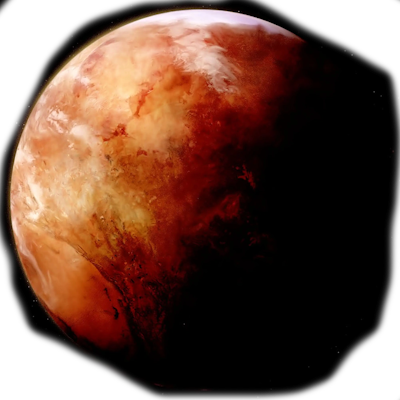
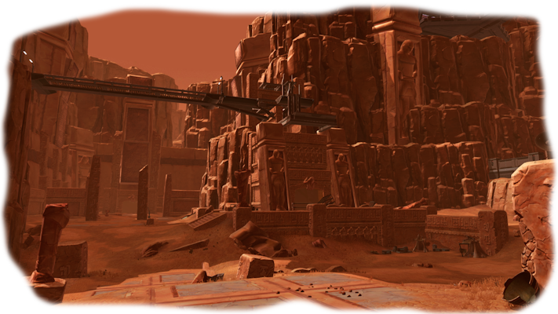
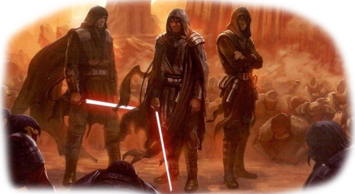

Коррибан
«Коррибан — отчий дом ситхов. Эта планета — место великой силы; Тёмная сторона живёт и дышит в самом ядре этого мира».
*Кордис — Бэйну*
Коррибан (англ. Korriban), также известный как Морабанд (англ. Moraband) во время Войн клонов и Песегам (англ. Pesegam) в эпоху правления деспота Зима, был единственной пригодной для жизни планетой в системе Хорусет. Была родиной чистокровных ситхов и священным местом для их Ордена. В древние времена здесь строили гробницы для сильнейших правителей, поскольку планета имела сильную ауру Тёмной стороны Силы.
После Великой гиперпространственной войны Коррибан был покинут. Позже, в 3958 ДБЯ, здесь была реконструирована Академия ситхов, и планета стала населена вновь. После битвы при Явине этот мир стал штабом Единых ситхов.
Основные данные Фауна Флора ЛокацииИстория
Бесконечная Империя
Отдалённый, зловещий Коррибан являлся истинной родиной чистокровных ситхов. За 30000 ДБЯ, здесь появилась колония килликов, выходцем из которой был, возможно, единственный инсектоид-лорд ситхов.
Примерно в 27000 ДБЯ на Коррибан вторглись ракатанцы в попытке присоединить этот мир к Бесконечной Империи и набрать рабов для ракатанских проектов, наподобие «Звёздной кузницы». Единственным артефактом, который сохранился с тех времён, была древняя ракатанская звёздная карта, вокруг которой позже была построена гробница Наги Садоу. В итоге из-за сопротивления ситхов, возглавленных королём Адасом, захватчики были вынуждены покинуть планету. Сам Aдас погиб в разразившейся битве, однако победа досталась его народу. Несмотря на успех, общество ситхов раскололось. Последующие распри, длинною в столетия, перекинулись на другие миры. Используя захваченные корабли ракатанцев, ситхи добрались до Зиоста, Арбры, Тунда. С тех пор Коррибан воспринимался только как место, где кроме гробниц нет ничего, а из населения были только религиозные фанатики.
Около 25126 ДБЯ планета формально входила в состав Империи Зима, где имела название Песегам. В 7000 ДБЯ большинство городов Коррибана были опустошены войной между Даткой Граушем и ситхами-соперниками.
Империя ситхов

Империя ситхов была основана приблизительно в 6900 ДБЯ изгнанными, падшими джедаями, пережившими битву при Корбосе, вместе с которой завершилась и Столетняя тьма. Скитаясь по Неизведанным Регионам, они наткнулись на Коррибан. Падшие джедаи поразили ситхов своими способностями к Силе и возвысились до богоподобного статуса, став для них новыми правителями.
Из-за практикуемой ситхской магии Коррибан становился всё более ужасным и опасным. Ситхи строили здесь огромные дворцы и целые погребальные комплексы в честь своих Тёмных лордов. Приблизительно в 5000 ДБЯ, планета стала конечной точкой новооткрытого Дарагонского гиперпространственного пути, когда её случайным образом обнаружили Гэв и Джори Дарагоны. Это событие привело к Великой гиперпространственной войне, по окончании которой Империя ситхов пала, а Коррибан утратил почти всю свою значимость и за тысячу лет практически полностью исчез со звёздных карт. Несмотря на убеждение, что после войны ситхи исчезли как вид, здесь на протяжении ещё целых тысячелетий жили изолированные сообщества киссай и массасси.
Старые войны ситхов
До 3993 ДБЯ Коррибан был заново заселён тёмными джедаями, выжившими в Войне Экзара Куна. В те годы здесь образовалось новое поселение Дрешде, ставшее столицей планеты, и появилась Академия ситхов. Во времена Великой охоты Дюрон Кель-Дрома и Шейла Нуур погибли на планете, так и не очистив её от терентатеков. Позже Коррибан стал секторальной штаб-квартирой корпорации «Цзерка». В поисках «Звёздной кузницы» на планету явились Дарт Реван и Дарт Малак, обращённые на Тёмную сторону рыцари-джедаи. По возвращении на Светлую сторону Реван вновь посетил академию в 3956 ДБЯ, чтобы снова найти Звездную карту и использовать её уже в интересах Республики.
Приблизительно в 3954 ДБЯ прибывшая разведать присутствие боеспособных частей ситхских солдат и адептов Тёмной стороны республиканская группа обнаружила на планете практически одни руины — результат неизвестной тогда Гражданской войны ситхов. Появилось мнение о планах Ревана вернуться на Коррибан и очистить его от всех потенциальных последователей ситхов, чему свершиться было не суждено, поскольку джедай бесследно исчез. Тем не менее, Республика нашла доказательства того, что нескольким лордам удалось избежать планетарного побоища и скрыться в отдалённых уголках галактики.
После смерти Дарта Малака древние могилы в Долине тёмных лордов были разграблены. Каждая гробница была связана с историей и наследием старой Империи, и содержала в себе множество тайн и великих ситхских реликвий. Равнины Коррибана усеивали лишь изувеченные, обугленные трупы — всё, что осталось от ситхов, когда-то населявших этот мир, не считая злых духов, натравливавших хссиссов на каждого, кто тревожил их покой.
В хаосе Гражданской войны, практически уничтожившей Орден джедаев, мастер Лонна Ваш прибыла на Коррибан в поисках укрытия. В итоге она попала в ловушку Дарта Сиона и была убита в руинах академии, выполнив при этом роль приманки для джедая-изгнанницы, которая сумела выйти из расставленной западни и обнаружить давно потерянную гробницу Лудо Кресша.
Великая галактическая война
После поражения Империи ситхов в Великой гиперпространственной войне остатки ситхских войск под руководством лорда Вишейта покинули Коррибан, отправились на Нафему, а затем после долгих скитаний по галактике прибыли на Дромунд-Каас. Именно здесь была основана новая, более могущественная Империя. Беглецы прочно обосновались на Дромунд-Каасе, но от идеи покорить галактику и вернуть историческую родину не отказывались.
В 3681 ДБЯ объединённый флот ситхов прибыл на орбиту Коррибана и прорвал слабую оборону Республики. На борт космической станции, вращающейся на орбите планеты, высадились Дарт Виндикан и Малгус и атаковали двух джедаев-защитников — Као Сен Дарака и его ученицу Сатель Шан. Мастер-джедай ранил Виндикана и вступил в бой со вторым ситхом, но, предвидя будущее поражение, приказал ученице бежать и был убит. После этого Малгус, воспользовавшись ранением учителя, убил его.
У ситхов возвращение Коррибана имело главный приоритет ещё со времён Великой галактической войны. Взяв планету под свой контроль, было решено восстановить местную Академию.
Холодная война
После подписания Корусантского соглашения Коррибан стал главным центром обучения ситхов, сооружённом, видимо, на гробницах и остатках города Дрешде. В этот же период было обнаружено немало древних заброшенных усыпальниц и пещер. Тогда каждый, кто обучался на Коррибане в стремлении стать учеником лорда ситхов или же Дарта, был вынужден пройти различные жестокие испытания, которые часто становились настолько опасными, что из всего множества претендентов, аколитов, выживал только один. Число смертей было просто астрономическим. Обычная ситхская практика убийств и предательств аколитам была запрещена под страхом смерти, но это вовсе не означало, что такого не происходило. В гробницах или в пещерах ученики расставляли ловушки и засады, чтобы убрать своих действующих или потенциальных конкурентов, часто возлагая вину на зверей и на сумасшедших обитателей этих же гробниц. Не менее страшная судьба настигала пребывавших там имперских солдат, развращённых тёмной энергией планеты и утративших разум, из-за чего нападали на своих здоровых сослуживцев и на других окружающих.
Известно, что именно на Коррибане проходили обучение двое могущественных аколитов: неизвестный ситх-воин и потомок древнего лорда Каллига. Ученичество обоих прошло в рекордно короткие сроки, и каждый из них стал полноценных ситхом-учеником.
Вторая Великая галактическая война
Война между Республикой и Империей ситхов вспыхнула с новой силой. В 3638 ДБЯ республиканцы, действуя по плану полковника Риана Дарока и агента Терона Шана, атаковали Коррибан и за короткое время захватили Академию ситхов. Как выяснилось, Дарок был тайным членом Ордена Ревана, а развёрнутое нападение — лишь средством заполучить ракатанскую технологию.
В 3637 ДБЯ Коррибан подвергся нападению с совершенно новой стороны — на политической арене появилось неведомое до этого государство по названием Вечная Империя. За отказ ситхов преклонить перед нею колено Закуульский флот стал бомбардировать местные храмы. Большую часть разрушенных строений удалось восстановить, однако немало древних артефактов осталось погребённым под слоем навалившегося песка.
Новые войны ситхов
В 1006 ДБЯ Братство Тьмы под руководством Каана, Кордиса и Копежа стремилось восстановить на планете старую Академию. Первый из них считал, что отбить этот мир значить одержать большую, знаменательную победу в борьбе против Республики и Ордена джедаев. После серьёзного наземного сражения с участием как обычных солдат, так и чувствительных к Силе воинов, последнее слово осталось за ситхами. Джедаи получили серьёзный удар, ведь тогда погибли абсолютно все приверженцы Света. Восстановленная Академия стала настоящим родником талантливых тёмных адептов, самых могущественных учеников во всём Ордене ситхов.
Спустя три года на планету прибыл человек, позже известный как Дарт Бэйн, который постигнув знания ситхов, позже в корне изменил их принципы, введя так называемое Правило двух. Однажды проиграв бой с одним из учеников Академии, он отправился в Долину Тёмных лордов на поиск ответов в гробницах давно усопших ситхов. Пробыв там несколько недель, Бэйн голодный и измотанный вернулся ни с чем. По его мнению духи давно покинули Коррибан, сочтя самого Бэйна и его современников недостойными последователями Тёмной стороны.
Войны клонов и Галактическая Империя

В 24 ДБЯ ситхский культист Гранта Омега пытался наладить контакт с выжившими лордами ситхов. На Коррибане ему удалось встретиться с Дартом Тиранусом, но был убит в завязавшейся схватке с Оби-Ваном Кеноби.
Накануне Войн клонов планета была захвачена Коммерческой гильдией. Помимо сотрудников организации, здесь проживали в основном те, у кого попросту не было возможности покинуть Коррибан.
В 22 ДБЯ здесь разразилась битва, забравшая жизни множества республиканских солдат-клонов под командованием генерала-джедая Иита Кота.
Год спустя на планету прибыли двое павших джедаев, Квинлан Вос и Тол Скорр, соперничавших друг с другом, чтобы найти для графа Дуку голокрон Дарта Андедду. Миссия прошла успешно, и в качестве награды Вос получил кристалл для светового меча, который когда-то принадлежал владельцу искомого голокрона.
В конце Войн клонов Коррибан посетил гранд-мастер Йода, проходивший испытания Жриц Силы. В Долине Тёмных лордов ему довелось повидать собственного демонического двойника, дух Дарта Бэйна, различные иллюзии Приказа 66, гибель Мейса Винду и Асоки Тано. Всё это являлось результатом использования Силы Дартом Сидиусом и Дартом Тиранусом в тщетной попытке «сломить» джедая и склонить его на Тёмную сторону.
Во времена Галактической гражданской войны определённым спросом пользовалось коррибанское вино.
Вскоре после битвы при Явине в коррибанские гробницы древних правителей, всё ещё часто посещавшиеся призраками, явился сам Палпатин, теперь уже как Император Галактической Империи. Там он надеялся ещё лучше познать Тёмную сторону, но его вопросы только приводили в ярость мумифицированных ситхов. Палпатину повезло, что его раненого и измученного спас Дженг Дрога, один из Рук Императора, который доставил своего господина в Имперский Центр и поместил в резервуар с бактой.
Во время паломничества по планете, накануне битвы за Эндор, Палпатин угодил в расставленную повстанцами засаду, которые намеревались проникнуть на имперский корабль и выкрасть информацию о второй «Звезде смерти», что безусловно помогло бы им одержать победу над Империей.
Предположительно в этот период на Коррибане возводилась отдельная усыпальница для Дарта Вейдера, которая так и осталась пустой, поскольку тот перед смертью перешёл обратно на Светлую сторону Силы.
Примерно в 17 ДБЯ на планету был вынужден приземлиться бывший джедай, охотник за головами А'Шарад Хетт, преследовавший мужчину-беглеца по имени Реск. После расправы над жертвой Хетт услышал таинственный голос, звавший во тьму. Следуя за ним, охотник наткнулся на запечатанную дверь, открыв которую, обнаружил мерцающий голокрон ситхов, когда-то принадлежавший одному из первых лордов ситхов КсоКсаан. Её призрак поведал, что ждал именно такого как Хетт. Того, кто ранее служил свету, но понял, что это бессмысленно. На этом призрак предложил бывшему джедаю познать учение ситхов, и тот согласился.
В 1 ДБЯ при таинственных обстоятельствах около долины Голг разбился пиратский корабль «Доблесть Джинни». Капитан судна Наз Фелиюд, пробравшись в гробницу древнего лорда ситхов, похитил оттуда несколько хранившихся артефактов, одним из которых было Сердце Грауша, чувствительный к Силе кристалл, которым Датка Грауш заменил своё сердце. В результате этой кражи почти весь экипаж корабля был медленно убит, а затем превращён в зомби. Беббнод Люрун, один из выживших, предполагая, что капитан мёртв, взорвал корабль.
Намного позже исследователи Нового Ордена джедаев отыскали записи бортового журнала, однако аналитики Новой Республики посчитали их сомнительным источником информации.
Новая Республика
В 11 ПБЯ Палпатин уже в новом, клонированном теле, распад которого он пытался остановить, вновь прибыл на Коррибан. Повстречавшиеся духи ситхов не одобряли его решение спасти свою жизнь, и предложили бывшему Императору место среди их мумифицированных останков в гробнице, построенной для Дарта Вейдера. На что, однако, получили отказ. Сидиус настаивал на том, что он должен выжить. Покойные Тёмные лорды поведали о невозможности сохранить его последнее тело, но ему поможет свежая кровь джедая, новорождённого Энакина Соло.
Позже, в 14 ПБЯ, под руководством тёмного джедая Тавион Аксмис на Коррибан явились Последователи Рагноса, которые надеясь возродить захороненного там Марка Рагноса, древнего лорда ситхов. Эти намерения не укрылись от глаз джедаев, и после длительного расследования следы привели тех на Коррибан. В разразившейся битве дух Рагноса вселился в тело Тавион, но был сражён Джейденом Корром, учеником Кайла Катарна.
Наследие

Примерно с 30 ПБЯ по 127 ПБЯ Дарт Крайт и его Единые ситхи использовали Коррибан в качестве своей тайной штаб-квартиры, действуя всё время из тени, как когда-то делал Палпатин.
В 40 ПБЯ Алема Рар отправилась на Коррибан, чтобы примкнуть в ситхам и помочь Дарту Кейдусу сосредоточиться после смерти Люмии. После некоторого убеждения ситхи позволили Алеме остаться. За несколько лет до 44 ПБЯ Люк Скайуокер, возможно, желая стереть всякое упоминание о Коррибане, удалили из джедайских компьютеров всю навигационную информацию о палнете, и попросил Галактический Альянс сделать то же самое. Несмотря на это, в древних запертых записях осталось достаточно информации, которая позволила ему, его сыну, Джейне Соло и Вестаре Каи добраться до планеты в поисках Затерянного племени ситхов.
В 137 ПБЯ Крайт вернулся на Коррибан и потребовал от древних ситхов — Дарта Нихилуса, Дарта Андедду и Дарта Бэйна — поделиться знаниями, как исцелиться или хотя бы замедлить рост юужань-вонговской крабовой брони, поразившей его тело, но те отказались помогать.
Месяцы спустя Дарт Уиирлок убил Крайта и поместил его труп в стазисную камеру в древнем храме КсоКсаан на Коррибане для того, чтобы остальные ситхи не узнали о смерти своего хозяина[44]. Позже прибывшие туда Дарт Малади и Дарт Нил обнаружили в камере только доспехи. Сам Крайт таинственно исчез. После его окончательной смерти и последующего краха Империи все ситхи-штурмовики, пребывавшие на Коррибане, сошли с ума и начали убивать каждого, кто был рядом.
Основные данные
Регион: Внешнее кольцо.
Сектор: Эсстран.
Система: Система Хорусет.
Звезда: Хорусет.
Орбитальная позиция: 2.
Спутники: 7.
Период вращения: 28 стандартных часов.
Орбитальный период: 780 местных дней.
Класс: Земной.
Диаметр: 16890 км.
Атмосфера. Пригодна для дыхания.
Климат. Холодный, засушливый.
Сила тяготения: 140 % от стандартной.
Тип ландшафта: Горы, каньоны, высушенные русла рек.
Правительство: Империя ситхов.
Фауна
Коррибан известен своей агрессивной и опасной фауной. Из-за суровых климатических условий большинство животных мигрировали под землю, где медленно мутировало в пещерах и катакомбах. Большая концентрация Тёмной стороны ещё больше испортила этих существ, сделав их умнее, быстрее и смертоноснее, чем можно от них ожидать. Страшный терентатек занимал вершину части пищевой цепочки, а рои крылатых шираков представляли угрозу для большинства других видов. Гончие ситхов, призванные древними лордами на службу вечными хранителями гробниц и храмов, питались стойкой энергией Тёмной стороны. В редких болотистых районах Коррибана обитали хссиссы, однако существовало поверье, что эти злобные звери населяли каждую экологическую нишу планеты. Также на планете водились врэйды.
Врэйды Большие неразумные рептилии, жившие на многих пустынных планетах, таких как Коррибан и Татуин, но также встречавшиеся на планетах типа Тайтона.
К'лор'слизни Опасное червеобразное существо с болот Ное'ха'она. Также их можно было обнаружить на Коррибане или Тарисе.
Терентатеки Вид необычных животных, питавшихся кровью и плотью чувствительных к Силе. Обитали в местах, наполненных энергией Тёмной стороны. По причине злобного характера заработали репутацию ужасных монстров.
Тук'ата Чувствительные в Силе существа, которые на протяжении тысячи лет использовались ситхами для охраны гробниц Тёмных лордов на Коррибане.
Хссиссы Полуразумные рептилии, обладавшие способностью влиять на чувствительных к Силе существ. Во время укуса хссисса жертва оказывалась отравленной ядом Тёмной стороны. Также хссиссы умели скрывать себя и становиться невидимыми, вероятно, делая это при помощи Силы.
Шираки Большие, похожие на летучих мышей создания, с острыми, как бритва, клыками, обитавшие в пещерах на Коррибане.
Флора
Из-за вечных войн и эксперементов ситхов планета превратилась в почти полностью засохшую пустыню.
Локации
Академия ситхов Была центром Империи ситхов в годы Гражданской войны джедаев, где обучались чувствительных к Силе особи мастерству Тёмной стороны.
Дрешде Столица Коррибана.
Долина Голг Ещё одно место для погребения усопших ситхов. Известно, что здешние памятники были выстроены намного раньше, чем желлы заселили Корусант.
Долина Тёмных лордов Изначально место захоронения коррибанских владык. Позже там стали возводить гробницы прибывших на планету Изгнанников. Одними из самых известных строений являлись многовековой Великий храм и Крепость лорда Креусиса. К востоку от Долины тёмных лордов в естественной впадине располагался Вечный костёр. Своё название получил из-за незатухающего пламени, постоянно подпитываемого телами мертвых рабов.